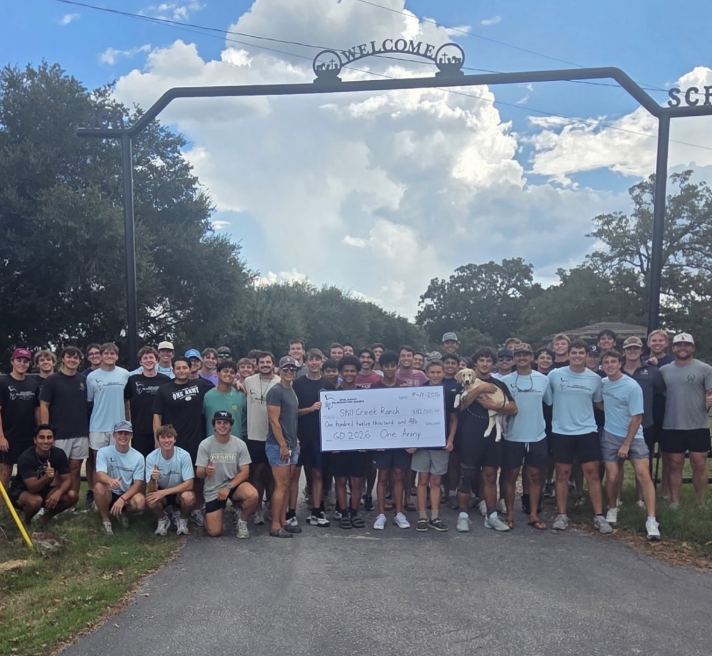

About
One Army and Still Creek Ranch
Gladiator Dash
Gladiator Dash is a 3.1 mile obstacle-integrated mud run and the main philanthropy event of the Texas A&M men's organization, One Army. As Bryan-College Station's original obstacle-integrated mud run, Gladiator Dash is definitely not just another 5K. With challenging obstacles throughout the course, this race will get you muddy and unleash your inner Gladiator.
Race Day includes live music, food trucks, and plenty of fun, so feel free to come early and stay late! 100% of the proceeds from Gladiator Dash benefit Still Creek Ranch, which is how we help raise thousands of dollars for Still Creek Ranch each year.
Still Creek Ranch
Since 1988, Still Creek has rescued boys and girls from crisis environments including abuse, neglect, abandonment, sex trafficking, and restored their lives by placing them in a loving, family-style home. Over the years One Army has had the privilege to work with Still Creek by serving them in any way that we can: from raising over $900,000 to spending time and forming relationships with the kids.
To learn more about the amazing things they do at Still Creek Ranch, visit stillcreekranch.org .

One Army | Texas Aggie Men United
One Army is a men's service and leadership organization at Texas A&M University which focuses on developing its members as young men while giving back to our community. The One Army mission is to develop its members as Aggies and leaders by serving the campus and community and promoting unity in Aggieland.